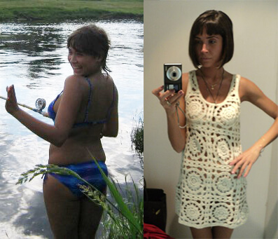
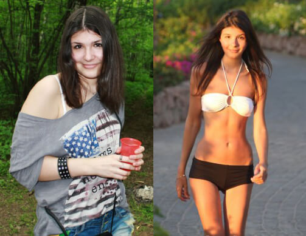
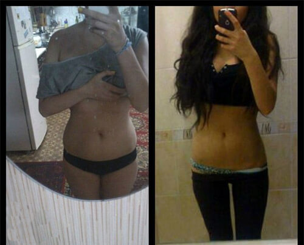
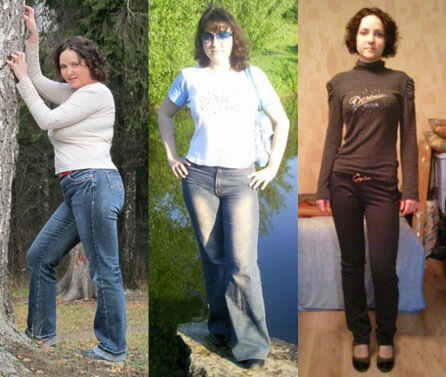
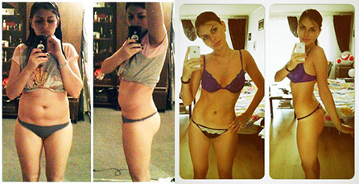
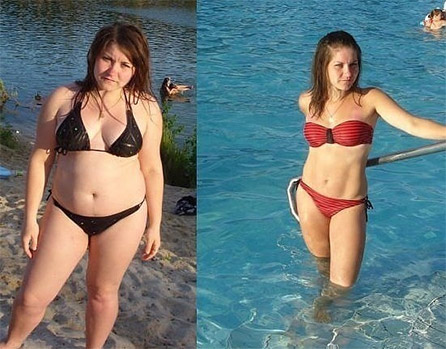
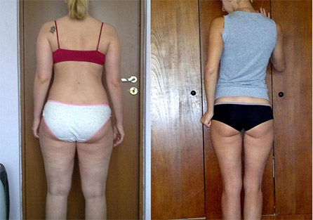
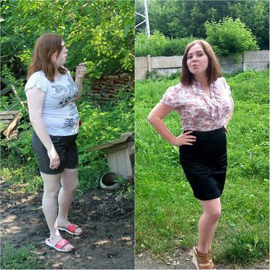

Willst du schlank sein?... Wir haben sie gefragt WIE!
Ein neuer Boom der Abmagerung hat die Welt erobert- draußen trifft man immer öfter sehr dünne Frauen. Aber sie machen keine Hungerdiät – sie haben ein neues wirksames Mittel im Kampf gegen Übergewicht, aber…. sie sind zu weit gegangen und habe ZU VIEL ABGENOMMEN.
Moderne Zeitschriften fordern schon seit längerer Zeit mit der Abmagerung "nicht zu weit zu gehen", sie wenden sich gegen radikale Methoden.
Wir haben einige Fräulein interviewt und sie haben erzählt, wie magert man heutzutage ab.
Am Catwalk war ich schon als ich 14 war – da war ich sehr groß und zierlich und man nannte meine Figur ideal. Aber dann kam die Geschlechtsreifung und Hormone haben mir einen Strich durch die Rechnung gemacht - mein Körper begann rund zu werden, ich bekam einen großen Po, Wangen... Da wurde ich sozusagen ein “üppiges Mädchen” und der Weg zum Catwalk wurde gesperrt...
Als ich 15 war und jetzt: der Unterschied über ZWANZIG Kilo!
Man sagte mir: entweder du kehrst zu deiner vorherigen Figur zurück – oder Auf Wiedersehen! Zu dieser Zeit habe ich mein Studium schon vernachlässigt, also gab es kein Zurück mehr. Ich musste dringend abnehmen .
Ich habe alle Zeitschriften durchgesucht, auch im Internet – ich habe nach einem schnellen und richtigen Mittel gesucht. Ich war zu jeder Schandtat bereit: Tabletten, Hunger... Auf einem Womanforum fiel mir auf, dass viele einen ungewöhnlichen Weg gehen – sie nehmen EcoSlim ein. Es heißt EcoSlim hat schon eine riesige Nachfrage überall im Ausland und jetzt auch in Deutschland aber nicht jeder kennt dieses Mittel. Die Mädchen zeigten Fotos - die Ergebnisse waren einfach super - und innerhalb kürzester Zeit, gerade das was ich gesucht habe. Das ist natürlich besser als die Tabletten!
Ich dreimal täglich jeweils 25 Tropfen EcoSlim ein und schon in erster Woche habe ich 6 Kilo abgenommen, also ich habe etwa 1 Kilo pro Tag verloren. Ich war ein wenig geschockt, denn überall behauptet man: die Norm sei 1 Kilo pro Woche, außerdem aß ich wie immer – nicht viel, aber ohne Diät. Sogar Süßigkeiten, aber ich nahm weiter ab. Ich nahm EcoSlim weiter ein - das Gewicht verschwand sekündlich! Bald war ich schon bei 45 kg, also 15 Kilo weniger als mein Ausgangsgewicht!
Dieses Gewicht ist der Traum eines jeden Models, aber ich dachte, dass ich noch weiter abnehmen kann. Jetzt wollte ich noch weitere 5 Kilo verlieren, also auf 40 Kilo kommen, wie bei meinem Lieblingsmodell - Chanel Iman und sie ist in unserem Business einfach DAS Vorbild. Und schon in einem Monat habe ich es geschafft!
Jetzt bin ich offiziell das schlankste deutsche Modell und bin stolz darauf. Viele belästigen mich mit Fragen zu meine Gesundheit und sagen, dass ich einige Kilo zunehmen solle – es ist Quatsch. Ich fühle mich ausgezeichnet und das wichtigste – ich habe eine sehr gute Karriere gemacht. Jetzt lebe ich und arbeite in Mailand und das ist DIE Modemetropole genauso wie auch Paris."
- Schule Nr. 11 1988—1998
- RUB, Ergonomie 1998—2003
"Als ich 30 war traf ich meine Mitschülerin, die ich seit dem Abiturientenball nicht gesehen habe. Da wir beide keine Zeit haben, haben wir Telefonnummern ausgetauscht und uns verabredet.
Den ganzen Tag war mir komisch zumute – wir sind doch im gleichen Alter und Janina hat sich überhaupt nicht verändert! Sie sah so aus, als hätte unser Abiturientenball noch gestern stattgefunden, im Minirock mit schlanken Beinen und dünner Taille… Aber auch wie ich hat sie zwei Kinder!
Ehrlich gesagt war ich da nicht in der besten Kondition, besonders im Vergleich zu Janina – etwa zehn überflüssige Kilo, und dazu diese verdammte Zellulitis überall… Ich aß vielleich nicht so viel, und sogar trieb ein wenig Sport und trotzdem…
Ich habe 10 Kilo verloren und wurde um 10 Jahre jünger!Also, als ich mir mit Janina traf, fragte ich vorsichtig, wie es ihr gelingt so ausgezeichnet auszusehen. Ich erwartete die Erzählungen über strenge Diät und tägliche Trainings… aber sie hat sich eine schrecklich kalorienreiche Nachspeise bestellt! Sie aß und erzählte, dass sie wegen der Kinder fast keine Zeit für sich selbst hat! “Ohne EcoSlim konnte ich überhaupt aus den Fugen geraten,” – sagte sie , und da lies sich mich endlich meine Fragen loswerden.
Viele Leute sagen, dass ich zu abgemagert bin, aber ICH BIN GLÜCKLICH DAMIT!
Deswegen nehme ich EcoSlim fast täglich ein. Meine überflüssigen 10 Kilo sind verschwunden… innerhalb von 2 Wochen! Meine übliche Kleidung ist jetzt ungewöhnlich groß – aber ich konnte nicht mehr aufhören. Ich versprach das ich nur noch ein wenig dünner werde und dachte - ok, nur noch ein Kilo und Schluss damit, es war gar nicht leicht damit aufzuhören...
Jetzt will ich nicht weiter abnehmen, denn ich wiege 46 Kilo. Die Bekannten lassen mich nicht in Ruhe: sie sagen ich sehe einem Gerippe ähnlich, ein wenig üppiger wäre es besser… Aber ich fühle mich wohl in meinem neuen Körper, was auch nicht jeder von sich behaupten kann. Mein Mann ist begeistert. So schlank war ich noch nie, noch nicht einmal in der Schulzeit! Und jetzt setze ich auch kein Fett mehr an . Wenn ich während einer Woche zu viel esse (wie zum Beispiel im Urlaub) - bleibt das Gewicht trotzdem unverändert. Das freut mich sehr. Alle träumen davon kein Fett beim Essen anzusetzen..."
Wegen unglücklicher Liebe wollte ich magerer werden. Es ist so, dass wir seit Anfang der Schule Freunde waren, aber dann habe ich mich verliebt.
Florian (es ist sein Name) hielt nichts zurück, und sprach über andere Mädchen und sagte ständig “Schlanke Mädchen habe ich gern”, “Ein flacher Bauch ist so schön” - und dann streichelte er über meinen Bauch (obwohl mein Bauch klein war), er tat das immer, wenn ich etwas gegessen habe… Zuerst dachte ich er kennt mich am besten, und bald versteht er wie cool ich bin und besser als diese schlanken Hippen, aber dann verstand ich - das kommt so sicher wie das Amen im Gebet, wenn ich will dass Florian mich als Mädchen zu schätzen lernt - muss ich abnehmen.
Nur jetzt verstehe ich, wie DICK ich war!
Zu dieser Zeit befand sich meine Mama (sie hält immer verschiedene Diäten) in einem weiteren Abnehmprozedere – sie nahm EcoSlim ein, dabei hat sie wirklich das Gewicht ständig reduziert. Und - ohne um Erlaubnis gefragt zu haben - begann ich dieses Mittel Ecoslim aus der Verpackung nach Anleitung zu verwenden.
Die Kilos begannen so drastisch verschwinden, dass ich glaubte dass die Waage kaputt sei. Kann es sein – gestern war ich bei 60, heute bei 59 und innerhalb von 2 Tagen - bei 58 Kilo!!! Aber ich habe wirklich schnell abgenommen! Und ich wollte nicht aufhören zuerst soll Florian sich in mich verlieben…
Jetzt ist er von meiner Figur begeistert!
Also ich habe abgenommen und wiege jetzt 43 Kilo!!! Meine Mutter hat es zu spät bemerkt - erst als sie in mein Zimmer kam als ich mich umgezogen habe. Sie verstand dass ich ihr EcoSlim genommen habe und war außer sich: "Was machst du? Du bist doch doppelt so dünn!!!" Aber ich hatte schon keine Zeit etwas zu erklären – vor der Tür wartete Florian schon auf mich, mit Blumen =)))
Wenn Sie überschüssige Kilos loswerden wollen, empfehlen wir EcoSlim nur AUF der OFFIZIELLEN WEBSEITE DEUTSCHER FIRMA bestellen, sonst können Sie eine Verfälschung erwerben, die nutzlos und sogar schädlich für Ihre Gesundheit sein kann!






